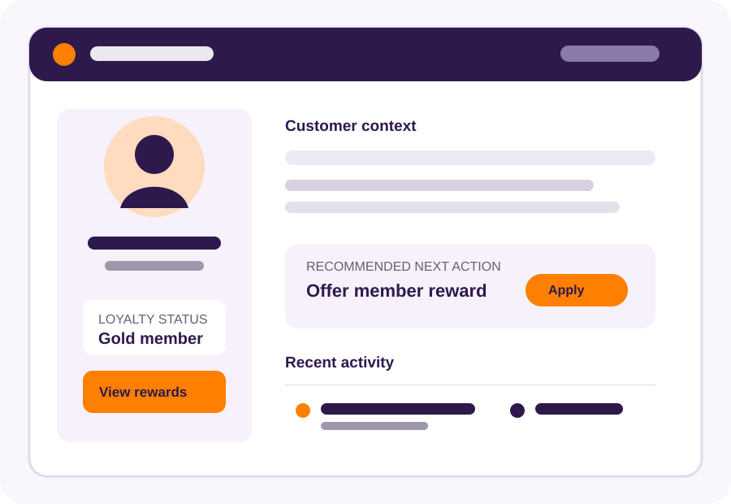

Recognise customers faster
Use an approved QR code, mobile number or name search to access the customer profile and loyalty context needed for the conversation.
Clienteling for connected retail teams
Give store associates the customer context they need to make every in-store interaction more relevant.
MotherApp's clienteling app brings together customer profiles, purchase history, loyalty status and approved engagement data in one frontline workspace. Retail teams can recognise customers, understand their context and take the right loyalty action while serving them in store.
Built for: enterprise retailers and multi-location consumer brands.

A practical frontline workspace
A clienteling app gives store associates a practical view of relevant customer information and actions during a face-to-face interaction. It supports personalised service without requiring staff to move between disconnected systems.
For the broader strategy, definition and benefits of clienteling, visit MotherApp's clienteling guide for retailers.
One customer view for more relevant service
Use an approved QR code, mobile number or name search to access the customer profile and loyalty context needed for the conversation.
Use relevant purchase history, preferences, browsing signals and engagement history to guide a more useful product, service or reward conversation.
Award points, issue coupons, validate stamps and process eligible rewards from the same frontline workflow.
Where integrations support it, connect frontline engagement with later customer activity to improve service processes and team coaching.
How MotherApp clienteling works
Connected capabilities
Retail proof
Use this section only for customer proof approved for public use. Each story should name the customer, describe the implemented scope, state relevant conditions and link to its approved case study.
Explore MotherApp customer storiesReplace this placeholder after legal, customer and marketing approval. Do not add universal conversion, loyalty-participation or AOV claims without an attributable source and stated conditions.
Frequently asked questions
No. A CRM manages customer data and engagement workflows more broadly. A clienteling app applies the relevant customer context and permitted actions to frontline store interactions. The two work best when they are connected.
That depends on your agreed data model, permissions and local requirements. A typical workflow may include loyalty status, purchase history, preferences and relevant engagement context.
Yes. MotherApp can support configured loyalty actions such as points, coupons, stamps and eligible reward redemptions within the store workflow.
Integration requirements depend on your existing systems and intended workflow. MotherApp can scope the required POS, ecommerce and CRM connections with your team before implementation.
Agree the measurement plan before launch. Depending on the implementation, it can include identification and engagement rates, completed loyalty actions, workflow adoption and attributed commercial outcomes.
Ready to explore clienteling?
See how a connected clienteling workflow can support your retail teams, loyalty programme and customer journey.
Book a demo